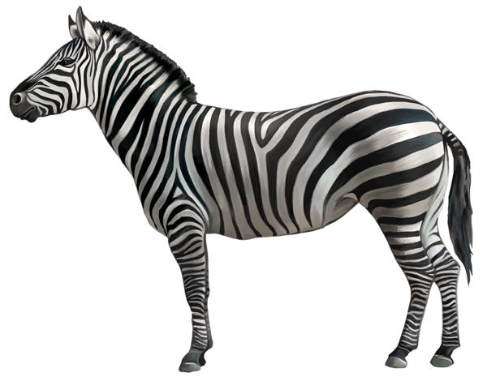
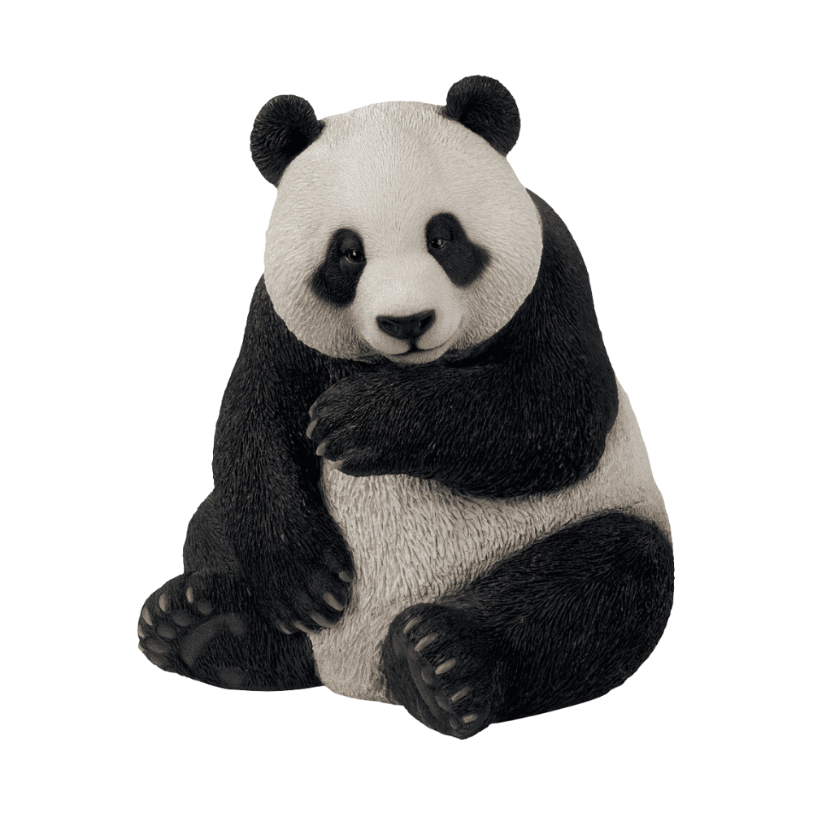
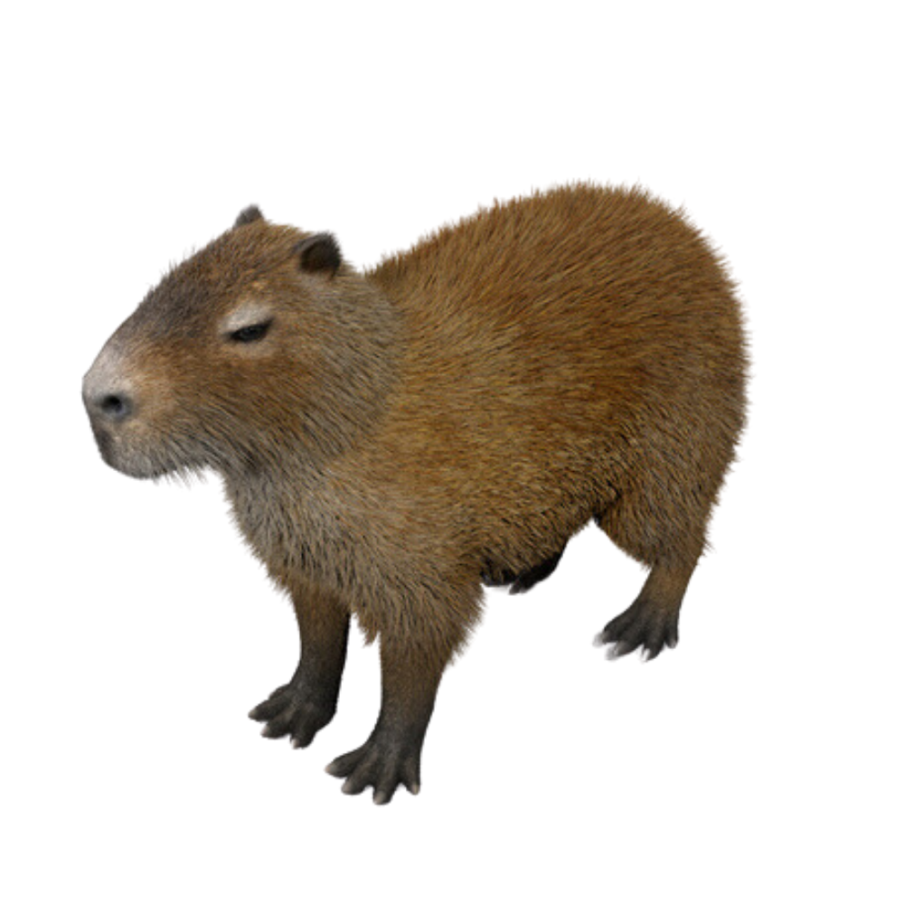
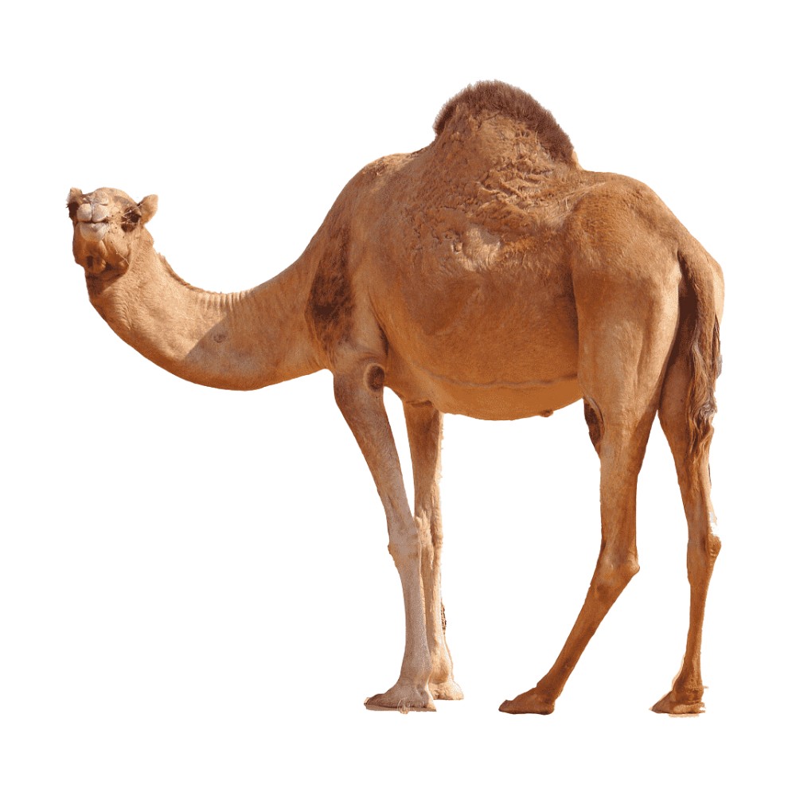
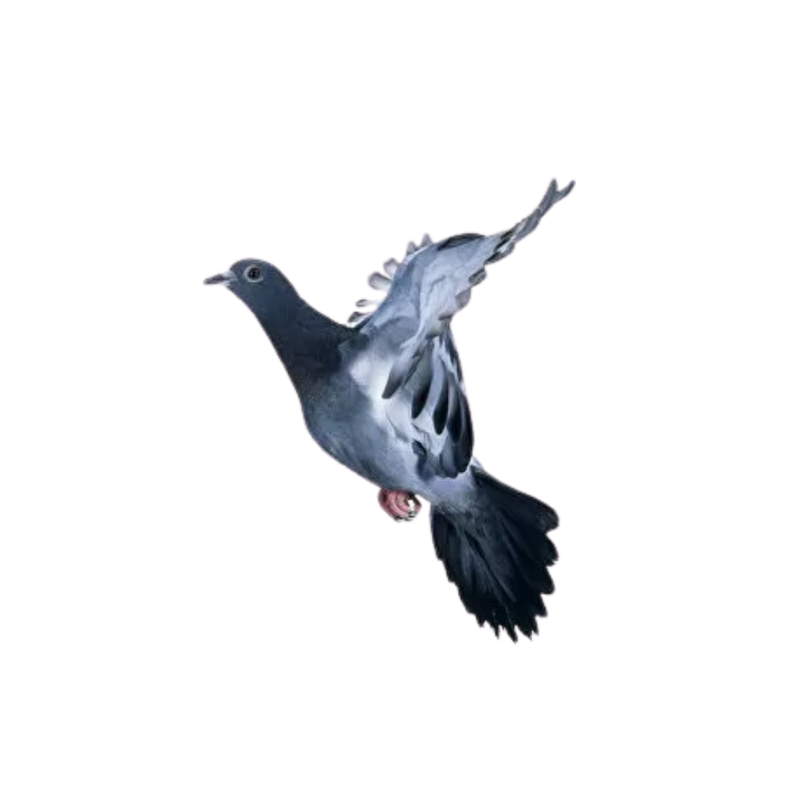

<html>

<head>
    <!-- for optimal display on high DPI devices -->
    <meta name="viewport" content="width=device-width, initial-scale=1.0" />

    <link rel="stylesheet" href="https://cdn.jsdelivr.net/npm/@photo-sphere-viewer/core/index.min.css" />
    <link rel="stylesheet" href="https://cdn.jsdelivr.net/npm/@photo-sphere-viewer/markers-plugin/index.min.css" />
    <link href="https://cdn.jsdelivr.net/npm/bootstrap@5.3.0-alpha1/dist/css/bootstrap.min.css" rel="stylesheet" integrity="sha384-GLhlTQ8iRABdZLl6O3oVMWSktQOp6b7In1Zl3/Jr59b6EGGoI1aFkw7cmDA6j6gD" crossorigin="anonymous">

</head>

<body>
    <script src="https://cdn.jsdelivr.net/npm/three/build/three.min.js"></script>
    <script src="https://cdn.jsdelivr.net/npm/@photo-sphere-viewer/core/index.min.js"></script>
    <script src="https://cdn.jsdelivr.net/npm/@photo-sphere-viewer/markers-plugin/index.min.js"></script>
    <script src="https://cdn.jsdelivr.net/npm/bootstrap@5.3.0-alpha1/dist/js/bootstrap.bundle.min.js" integrity="sha384-w76AqPfDkMBDXo30jS1Sgez6pr3x5MlQ1ZAGC+nuZB+EYdgRZgiwxhTBTkF7CXvN" crossorigin="anonymous"></script>
    <!-- the viewer container must have a defined size -->
    <div id="viewer" style="width: 100vw; height: 100vh;"></div>
    
    <script type="text/template" id="a1">
        <div class='alert alert-primary'>ม้าลาย</div>
        (ชื่อวิทยาศาสตร์: Equus quagga)
        
        <div>
            ม้าลาย เป็นสัตว์เลี้ยงลูกด้วยนมกีบคี่ จัดอยู่ในสกุลม้า (Equus) และจัดอยู่ในสกุลย่อย Hippotigris (แปลว่า ม้าลายเสือ) และDolichohippus 
            ม้าลายเป็นสัตว์ที่กินหญ้าเป็นอาหารหลัก สัตว์ที่ล่าม้าลายเป็นอาหารเช่น สิงโต ไฮยีนาลายจุด ในพื้นที่แบบที่ราบและภูเขา
            ม้าลายจะมีลักษณะสังคมแบบฝูงที่มีเพศผู้เป็นหัวหน้าเพียงตัวเดียว และประกอบด้วยม้าเพศเมียตัวเต็มวัยและลูก ๆ ส่วนม้าลายพันธุ์ เกรย์วีจะใช้ชีวิตแบบตัวเดียว หรือเป็นฝูงแบบความสัมพันธ์ระหว่างตัวไม่แนบแน่น
        </div>
    </script>

    <script type="text/template" id="a2">
        <div class='alert alert-primary'>แพนด้า</div>
        (ชื่อวิทยาศาสตร์: Ailuropoda melanoleuca)
        
        <div>
            แพนด้า เป็นสัตว์เลี้ยงลูกด้วยนมซึ่งปัจจุบันจัดอยู่ในวงศ์หมี (Ursidae) ถิ่นอาศัยอยู่ในประเทศจีน ลักษณะเฉพาะของแพนด้ายักษ์คือมีขนสีดำรอบดวงตา, ใบหู, บ่า, และขาทั้งสี่ข้าง ส่วนอื่นประกอบด้วยขนสีขาว บางครั้งจะใช้ชื่อ "แพนด้ายักษ์" ไว้แยกมันจากแพนด้าแดง 
            ถึงแม้ว่าแพนด้ายักษ์อยู่ในอันดับสัตว์กินเนื้อ แต่มันเป็นสัตว์กินใบไม้ โดยเฉพาะไม้ไผ่กับใบไม้ที่รวมอยู่ในบรรดาอาหารของแพนด้ายักษ์มากกว่า 99% แพนด้ายักษ์ในป่ามักกินหญ้าชนิดอื่น หัวป่า หรือแม้แต่เนื้อนก, อันดับสัตว์ฟันแทะ หรือซากศพ 
            ส่วนแพนด้ายักษ์ที่อยู่ในที่กักตัวมักได้รับน้ำผึ้ง ไข่ ปลา แยม, ใชไม้พุ่ม ส้ม หรือกล้วย พร้อมกับอาหารที่เตรียมการไว้แล้ว
        </div>
    </script>

    <script type="text/template" id="a3">
        <div class='alert alert-primary'>คาปิบาร่า</div>
        (ชื่อวิทยาศาสตร์: hydrochoerus และ hydrochaeris)
        
        <div>
            คาปิบาร่า เป็นหนูและสัตว์ฟันแทะขนาดใหญ่ที่สุดในโลก คาปิบาร่าเป็นสมาชิกของสกุล Hydrochoerus และมีสมาชิกที่อยู่ในสกุลเดียวกันที่หลงเหลืออยู่นั้นคือ Hydrochoerus isthmius 
            ญาติใกล้ชิดของคาปิบาร่าคือหนูตะเภา คาปิบาร่ามีถิ่นกำเนิดในทวีปอเมริกาใต้และอาศัยอยู่ในหุบเขาที่มีป่าหนาทึบและอยู่ใกล้กับแหล่งน้ำ 
            คาปิบาร่าเป็นสัตว์สังคมที่อยู่รวมกันเป็นฝูงจำนวนมาก โดยอาจพบได้มากถึง 100 ตัว แต่ส่วนมากจะอยู่เป็นฝูงแค่ 10-20 ตัวเท่านั้น 
            เนื่องจากไม่ได้ถูกล่าเพื่อเอาเนื้อเอาหนังจากมนุษย์มากนัก จึงทำให้ไม่มีความเสี่ยงที่จะสูญพันธุ์ แต่ถึงอย่างนั้นไขมันของแคพิบาราสามารถเอามาทำเป็นยาได้
        </div>
    </script>

    <script type="text/template" id="a4">
        <div class='alert alert-primary'>อูฐ</div>
        (ชื่อวิทยาศาสตร์: Arabian camel)
        
        <div>
            อูฐ เป็นสัตว์เลี้ยงลูกด้วยนมที่อยู่ในสกุล Camelus จัดอยู่ในวงศ์ Camelidae เป็นสัตว์ที่มีความอดทนสูง สามารถอาศัยอยู่ได้โดยไม่ต้องกินอาหารหรือน้ำเลย 2 สัปดาห์ เพราะมีไขมันสะสมไว้ในหนอกและร่างกายเก็บรักษาน้ำได้เป็นอย่างดี จึงสามารถอยู่ในที่ทุรกันดารเช่นทะเลทรายได้เป็นอย่างดี 
            อูฐกินอาหารประเภทใบไม้ในทะเลทราย ตัวโตเต็มที่มีความสูงถึงบ่าประมาณ 1.85 เมตร และหนอกสูงอีก 75 เซนติเมตร ความสามารถ วิ่งได้เร็ว 65 กิโลเมตรต่อชั่วโมง และเดินด้วยความเร็วคงที่ประมาณ 40 กิโลเมตรต่อชั่วโมง แบกน้ำหนักได้ 150-200 กิโลกรัม อุณหภูมิร่างกายเปลี่ยนแปลงได้จาก 35 องศาเซลเซียสในตอนกลางคืนมาเป็น 41 องศาเซลเซียสในตอนกลางวัน 
            ปัจจุบันสัตว์ในตระกูลอูฐได้ถูกนำมาเลี้ยงเป็นสัตว์เศรษฐกิจในบางประเทศ แต่ใช้ประโยชน์ในด้านต่าง ๆ ได้แก่ เป็นอาหาร ตัดขน รีดนม และใช้เนื้อเพื่อบริโภค 
        </div>
    </script>

    <script type="text/template" id="a5">
        <div class='alert alert-primary'>นกพิราบ</div>
        (ชื่อวิทยาศาสตร์: Columba livia)
        
        <div>
            นกพิราบ เป็นนกในวงศ์นกพิราบและนกเขา (Columbidae)โดยปกติคำว่า "นกพิราบ" จะหมายถึงนกพิราบเลี้ยง (รวมถึงนกพิราบแฟนซีด้วย) ส่วนนกพิราบนอกเหนือจากนี้จะเรียกว่า "นกพิราบป่า"
            นกพิราบป่ามีขนสีเทาอ่อน มีแถบสีดำสองแถบบนปีกแต่ละข้าง แต่ทั้งนกป่าและนกเลี้ยงนั้นมีความหลากหลายของสีและรูปแบบของขนเป็นอย่างมาก มีความแตกต่างระหว่างเพศเล็กน้อย
            นกชนิดนี้มักมีคู่ครองตัวเดียว มีลูกครั้งละ 2 ตัว พ่อและแม่ช่วยกันเลี้ยงดู โดยที่เมื่อจับคู่กันแล้วจะไม่แยกจากกันเลยตลอดชีวิต แม้ว่าคู่จะตายไปแล้ว
        </div>
    </script>


    <script>
        const viewer = new PhotoSphereViewer.Viewer({
            container: document.querySelector('#viewer'),
            panorama: 'img01/full.jpg',
            useXmpData: false,
            plugins: [
                [PhotoSphereViewer.MarkersPlugin, {
                    markers: [
                        {
                            id: 'm1',
                            position: { yaw: '-30deg', pitch: '-10deg' },
                            imageLayer: 'img01/a1.png',
                            size: { width: 375*1.5, height: 510*1.5 },
                            tooltip:"<div class='alert alert-primary'>ม้าลาย</div>",
                            content:document.getElementById("a1").innerHTML,
                        },    
                        {
                            id: 'm2',
                            position: { yaw: '-80deg', pitch: '-10deg' },
                            imageLayer: 'img01/a2.png',
                            size: { width: 520, height: 654 },
                            tooltip:"<div class='alert alert-primary'>แพนด้า</div>",
                            content:document.getElementById("a2").innerHTML,
                        },             
                        {
                            id: 'm3',
                            position: { yaw: '60deg', pitch: '-25deg' },
                            imageLayer: 'img01/a3.png',
                            size: { width: 300, height: 250 },
                            tooltip:"<div class='alert alert-primary'>คาปิบาร่า</div>",
                            content:document.getElementById("a3").innerHTML,
                        },                                         
                        {
                            id: 'm4',
                            position: { yaw: '90deg', pitch: '-10deg' },
                            imageLayer: 'img01/a4.png',
                            size: { width: 500, height: 507 },
                            tooltip:"<div class='alert alert-primary'>อูฐ</div>",
                            content:document.getElementById("a4").innerHTML,
                        },   
                        {
                            id: 'm5',
                            position: { yaw: '15deg', pitch: '0deg' },
                            imageLayer: 'img01/a5.png',
                            size: { width: 400, height: 510 },
                            tooltip:"<div class='alert alert-primary'>นกพิราบ</div>",
                            content:document.getElementById("a5").innerHTML,
                        },         
                    ],
                }],
            ],

        });
    </script>
</body>

</html>